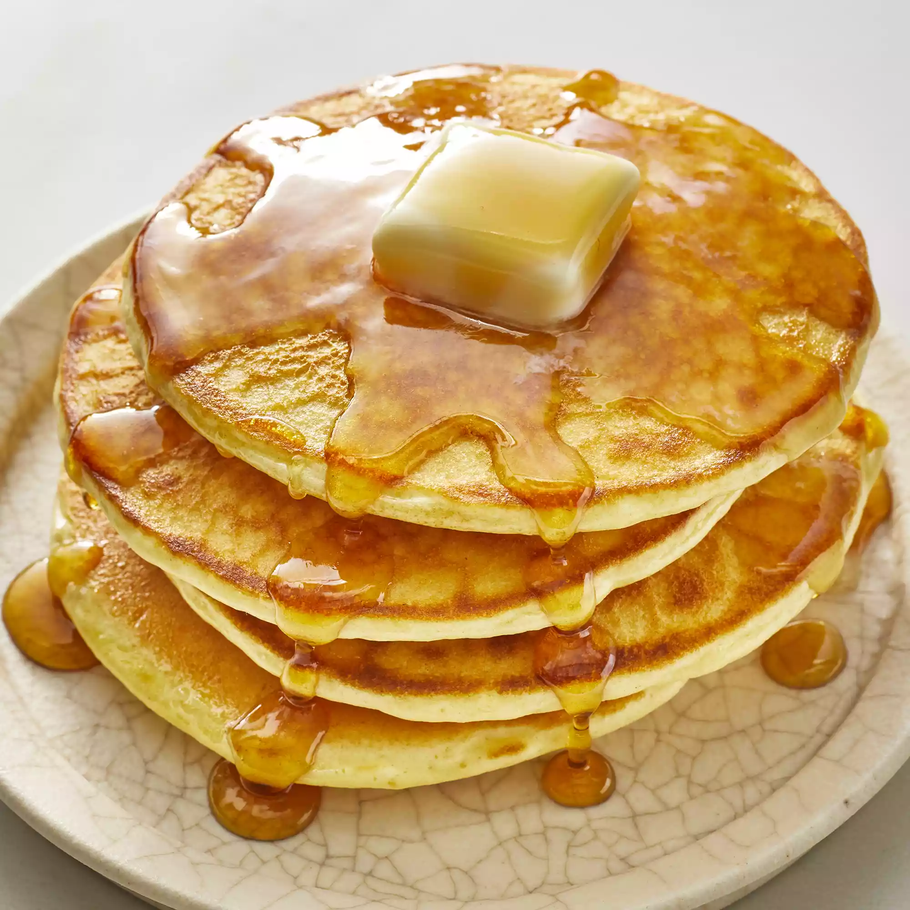

Old Fashioned Pancakes

The perfect, easy to make, 2 step guide to pancakes. Best enjoyed at breakfast with a
tall glass of chocolate milk.
Ingredients
- 1 1/2 cups all-purpose flour
- 3 1/2 teaspoons baking powder
- 1/4 teaspoon salt
- 1 tablespoon white sugar
- 1 1/4 cups milk
- 1 egg
- 3 table spoons (melted)
Directions
- Step 1
In a large bowl, sift together the flour, baking powder, salt and sugar. Make a well in
the center and pour in the milk, egg and melted butter; mix until smooth.
- Step 2
Heat a lightly oiled griddle or frying pan over medium-high heat. Pour or scoop the
batter onto the griddle, using approximately 1/4 cup for each pancake. Brown on both
sides and serve hot.
Back to home